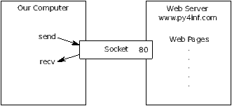

While many of the examples in this book have focused on reading
files and looking for data in those files, there are many different
sources of information when one considers the Internet.
In this chapter we will pretend to be a web browser and retrieve web
pages using the HyperText Transport Protocol (HTTP). Then we will read
through the web page data and parse it.
12.1 HyperText Transport Protocol - HTTP
The network protocol that powers the web is actually quite simple and
there is built-in support in Python called sockets which makes it very
easy to make network connections and retrieve data over those
sockets in a Python program.
A socket is much like a file, except that it
provides a two-way connection between two
programs with a single socket.
You can both read from and write to the same socket. If you write something to
a socket it is sent to the application at the other end of the socket. If you
read from the socket, you are given the data which the other application has sent.
But if you try to read a socket when the program on the other end of the socket
has not sent any data - you just sit and wait. If the programs on both ends
of the socket simply wait for some data without sending anything, they will wait for
a very long time.
So an important part of programs that communicate over the Internet is to have some
sort of protocol. A protocol is a set of precise rules that determine who
is to go first, what they are to do, and then what are the responses to that message,
and who sends next and so on. In a sense the two applications at either end
of the socket are doing a dance and making sure not to step on each other's toes.
There are many documents which describe these network protocols. The HyperText Transport
Protocol is described in the following document:
http://www.w3.org/Protocols/rfc2616/rfc2616.txt
This is a long and complex 176 page document with a lot of detail. If you
find it interesting feel free to read it all. But if you take a look around page 36 of
RFC2616 you will find the syntax for the GET request. If you read in detail, you will
find that to request a document from a web server, we make a connection to
the www.py4inf.com server on port 80, and then send a line of the form:
GET http://www.py4inf.com/code/romeo.txt HTTP/1.0
Where the second parameter is the web page we are requesting and then
we also send a blank line. The web server will respond with some
header information about the document and a blank line
followed by the document content.
12.2 The World's Simplest Web Browser
Perhaps the easiest way to show how the HTTP protocol works is to write a very
simple Python program that makes a connection to a web server and following
the rules of the HTTP protocol, requests a document
and displays what the server sends back.
import socket
mysock = socket.socket(socket.AF_INET, socket.SOCK_STREAM)
mysock.connect(('www.py4inf.com', 80))
mysock.send('GET http://www.py4inf.com/code/romeo.txt HTTP/1.0\n\n')
while True:
data = mysock.recv(512)
if ( len(data) < 1 ) :
break
print data
mysock.close()
First the program makes a connection to port 80 on
the server www.py4inf.com.
Since our program is playing the role of the "web browser" the HTTP
protocol says we must send the GET command followed by a blank line.

Once we send that blank line, we write a loop that receives data
in 512 character chunks from the socket and prints the data out
until there is no more data to read (i.e. the recv() returns
an empty string).
The program produces the following output:
HTTP/1.1 200 OK
Date: Sun, 14 Mar 2010 23:52:41 GMT
Server: Apache
Last-Modified: Tue, 29 Dec 2009 01:31:22 GMT
ETag: "143c1b33-a7-4b395bea"
Accept-Ranges: bytes
Content-Length: 167
Connection: close
Content-Type: text/plain
But soft what light through yonder window breaks
It is the east and Juliet is the sun
Arise fair sun and kill the envious moon
Who is already sick and pale with grief
The output starts with headers which the web server sends
to describe the document.
For example, the Content-Type header indicated that
the document is a plain text document (text/plain).
After the server sends us the headers, it adds a blank line
to indicate the end of the headers and then sends the actual
data of the file romeo.txt.
This example shows how to make a low-level network connection
with sockets. Sockets can be used to communicate with a web
server or with a mail server or many other kinds of servers.
All that is needed is to find the document which describes
the protocol and write the code to send and receive the data
according to the protocol.
However, since the protocol that we use most commonly is
the HTTP (i.e. the web) protocol, Python has a special
library specifically designed to support the HTTP protocol
for the retrieval of
documents and data over the web.
12.3 Retrieving an image over HTTP
In the above example, we retreived a plain text file
which had newlines in the file and we simply copied the
data to the screen as the program ran. We can use a similar
program to retrieve an image across using HTTP. Instead
of copying the data to the screen as the program runs,
we accumulate the data in a string, trim off the headers
and then save the image data to a file as follows:
import socket
import time
mysock = socket.socket(socket.AF_INET, socket.SOCK_STREAM)
mysock.connect(('www.py4inf.com', 80))
mysock.send('GET http://www.py4inf.com/cover.jpg HTTP/1.0\n\n')
count = 0
picture = "";
while True:
data = mysock.recv(5120)
if ( len(data) < 1 ) : break
# time.sleep(0.25)
count = count + len(data)
print len(data),count
picture = picture + data
mysock.close()
# Look for the end of the header (2 CRLF)
pos = picture.find("\r\n\r\n");
print 'Header length',pos
print picture[:pos]
# Skip past the header and save the picture data
picture = picture[pos+4:]
fhand = open("stuff.jpg","w")
fhand.write(picture);
fhand.close()
When the program runs it produces the following output:
$ python urljpeg.py
2920 2920
1460 4380
1460 5840
1460 7300
...
1460 62780
1460 64240
2920 67160
1460 68620
1681 70301
Header length 240
HTTP/1.1 200 OK
Date: Sat, 02 Nov 2013 02:15:07 GMT
Server: Apache
Last-Modified: Sat, 02 Nov 2013 02:01:26 GMT
ETag: "19c141-111a9-4ea280f8354b8"
Accept-Ranges: bytes
Content-Length: 70057
Connection: close
Content-Type: image/jpeg
You can see that that for this url, the
Content-Type header indicates that
body of the document is an image (image/jpeg).
Once the program completes, you can view the image data by opening
the file stuff.jpg in an image viewer.
As the program runs,
can see that we don't get 5120 characters each time we
call the recv() method.
We get as many characters that have been transfered across the network
to us by the web server at the moment we call recv().
In this example, we either get 1460 or
2920 characters each time we request up to 5120 characters of data.
Your results may be different depending on your network speed. Also
note that on the last call to recv() we get 1681 bytes which is the end
of the stream and in the next call to recv() we get a zero length
string that tells us that the server has called close() on its end
of the socket and there is no more data forthcoming.
We can slow down our successive calls recv() by uncommmenting the call
to time.sleep(). This way, we wait a quarter of a second after each call
so that the server can "get ahead" of us and send more data to us
before we call recv(). With the delay in place the program
executes as follows:
$ python urljpeg.py
1460 1460
5120 6580
5120 11700
...
5120 62900
5120 68020
2281 70301
Header length 240
HTTP/1.1 200 OK
Date: Sat, 02 Nov 2013 02:22:04 GMT
Server: Apache
Last-Modified: Sat, 02 Nov 2013 02:01:26 GMT
ETag: "19c141-111a9-4ea280f8354b8"
Accept-Ranges: bytes
Content-Length: 70057
Connection: close
Content-Type: image/jpeg
Now other than the first and last calls to recv(), we now get
5120 characters each time we ask for new data.
There is a buffer between the server making send() requests
and our application making recv() requests. When we run the
program with the delay in place, at some point the server might
fill up the buffer in the socket and be forced to pause until our
program starts to empty the buffer. The pausing of either the
sending application or the receiving application is called
"flow control".
12.4 Retrieving web pages with urllib
While we can manually send and receive data over HTTP
using the socket library, there is a much simpler way to
to perform this common task in Python by
using the urllib library.
Using urllib,
you can treat a web page much like a file. You simply
indicate which web page you would like to retrieve and
urllib handles all of the HTTP protocol and header
details.
The equivalent code to read the romeo.txt file
from the web using urllib is as follows:
import urllib
fhand = urllib.urlopen('http://www.py4inf.com/code/romeo.txt')
for line in fhand:
print line.strip()
Once the web page has been opened with
urllib.urlopen we can treat it like
a file and read through it using a
for loop.
When the program runs, we only see the output
of the contents of the file. The headers
are still sent, but the urllib code
consumes the headers and only returns the
data to us.
But soft what light through yonder window breaks
It is the east and Juliet is the sun
Arise fair sun and kill the envious moon
Who is already sick and pale with grief
As an example, we can write
a program to retrieve the data for
romeo.txt and compute the frequency
of each word in the file as follows:
import urllib
counts = dict()
fhand = urllib.urlopen('http://www.py4inf.com/code/romeo.txt')
for line in fhand:
words = line.split()
for word in words:
counts[word] = counts.get(word,0) + 1
print counts
Again, once we have opened the web page,
we can read it like a local file.
12.5 Parsing HTML and scraping the web
One of the common uses of the urllib capability in Python is
to scrape the web. Web scraping is when we write a program
that pretends to be a web browser and retrieves pages and then
examines the data in those pages looking for patterns.
As an example, a search engine such as Google will look at the source
of one web page and extract the links to other pages and retrieve
those pages, extracting links, and so on. Using this technique,
Google spiders its way through nearly all of the pages on
the web.
Google also uses the frequency of links from pages it finds
to a particular page as one measure of how "important"
a page is and how highly the page should appear in its search results.
12.6 Parsing HTML using Regular Expressions
One simple way to parse HTML is to use regular expressions to repeatedly
search and extract for substrings that match a particular pattern.
Here is a simple web page:
<h1>The First Page</h1>
<p>
If you like, you can switch to the
<a href="http://www.dr-chuck.com/page2.htm">
Second Page</a>.
</p>
We can construct a well-formed regular expression to match
and extract the link values from the above text as follows:
href="http://.+?"
Our regular expression looks for strings that start with
"href="http://" followed by one or more characters
".+?" followed by another double quote. The question mark
added to the ".+?" indicates that the match is to be done
in a "non-greedy" fashion instead of a "greedy" fashion.
A non-greedy match tries to find the smallest possible matching
string and a greedy match tries to find the largest possible
matching string.
We need to add parentheses to our regular expression to indicate
which part of our matched string we would like to extract and
produce the following program:
import urllib
import re
url = raw_input('Enter - ')
html = urllib.urlopen(url).read()
links = re.findall('href="(http://.*?)"', html)
for link in links:
print link
The findall regular expression method will give us a list of all
of the strings that match our regular expression, returning only
the link text between the double quotes.
When we run the program, we get the following output:
python urlregex.py
Enter - http://www.dr-chuck.com/page1.htm
http://www.dr-chuck.com/page2.htm
python urlregex.py
Enter - http://www.py4inf.com/book.htm
http://www.greenteapress.com/thinkpython/thinkpython.html
http://allendowney.com/
http://www.py4inf.com/code
http://www.lib.umich.edu/espresso-book-machine
http://www.py4inf.com/py4inf-slides.zip
Regular expressions work very nice when your HTML is well-formatted
and predictable. But since there is a lot of "broken" HTML pages
out there, you might find that a solution only using
regular expressions might either miss some valid links or end up
with bad data.
This can be solved by using a robust HTML parsing library.
12.7 Parsing HTML using BeautifulSoup
There are a number of Python libraries which can help you parse
HTML and extract data from the pages. Each of the libraries
has its strengths and weaknesses and you can pick one based on
your needs.
As an example, we will simply parse some HTML input
and extract links using the BeautifulSoup library.
You can download and install the BeautifulSoup code
from:
www.crummy.com
You can download and "install" BeautifulSoup or you
can simply place the BeautifulSoup.py file in the
same folder as your application.
Even though HTML looks like XML and some pages are carefully
constructed to be XML, most HTML is generally broken in ways
that cause an XML parser to reject the entire page of HTML as
improperly formed. BeautifulSoup tolerates highly flawed
HTML and still lets you easily extract the data you need.
We will use urllib to read the page and then use
BeautifulSoup to extract the href attributes from the
anchor (a) tags.
import urllib
from BeautifulSoup import *
url = raw_input('Enter - ')
html = urllib.urlopen(url).read()
soup = BeautifulSoup(html)
# Retrieve all of the anchor tags
tags = soup('a')
for tag in tags:
print tag.get('href', None)
The program prompts for a web address, then opens the web
page, reads the data and passes the data to the BeautifulSoup
parser, and then retrieves all of the anchor tags and prints
out the href attribute for each tag.
When the program runs it looks as follows:
python urllinks.py
Enter - http://www.dr-chuck.com/page1.htm
http://www.dr-chuck.com/page2.htm
python urllinks.py
Enter - http://www.py4inf.com/book.htm
http://www.greenteapress.com/thinkpython/thinkpython.html
http://allendowney.com/
http://www.si502.com/
http://www.lib.umich.edu/espresso-book-machine
http://www.py4inf.com/code
http://www.pythonlearn.com/
You can use BeautifulSoup to pull out various parts of each
tag as follows:
import urllib
from BeautifulSoup import *
url = raw_input('Enter - ')
html = urllib.urlopen(url).read()
soup = BeautifulSoup(html)
# Retrieve all of the anchor tags
tags = soup('a')
for tag in tags:
# Look at the parts of a tag
print 'TAG:',tag
print 'URL:',tag.get('href', None)
print 'Content:',tag.contents[0]
print 'Attrs:',tag.attrs
This produces the following output:
python urllink2.py
Enter - http://www.dr-chuck.com/page1.htm
TAG: <a href="http://www.dr-chuck.com/page2.htm">
Second Page</a>
URL: http://www.dr-chuck.com/page2.htm
Content: [u'\nSecond Page']
Attrs: [(u'href', u'http://www.dr-chuck.com/page2.htm')]
These examples only begin to show the power of BeautifulSoup
when it comes to parsing HTML. See the documentation
and samples at
www.crummy.com
for more detail.
12.8 Reading binary files using urllib
Sometimes you want to retrieve a non-text (or binary) file such as
an image or video file. The data in these files is generally not
useful to print out but you can easily make a copy of a URL to a local
file on your hard disk using urllib.
The pattern is to open the URL and use read to download the entire
contents of the document into a string variable (img) and then write that
information to a local file as follows:
img = urllib.urlopen('http://www.py4inf.com/cover.jpg').read()
fhand = open('cover.jpg', 'w')
fhand.write(img)
fhand.close()
This program reads all of the data in at once across the network and
stores it in the variable img in the main memory of your computer
and then opens the file cover.jpg and writes the data out to your
disk. This will work if the size of the file is less than the size
of the memory of your computer.
However if this is a large audio or video file, this program may crash
or at least run extremely slowly when your computer runs out of memory.
In order to avoid running out of memory, we retrieve the data in blocks
(or buffers) and then write each block to your disk before retrieving
the next block. This way the program can read any sized file without
using up all of the memory you have in your computer.
import urllib
img = urllib.urlopen('http://www.py4inf.com/cover.jpg')
fhand = open('cover.jpg', 'w')
size = 0
while True:
info = img.read(100000)
if len(info) < 1 : break
size = size + len(info)
fhand.write(info)
print size,'characters copied.'
fhand.close()
In this example, we read only 100,000 characters at a time and then
write those characters to the cover.jpg file
before retrieving the next 100,000 characters of data from the
web.
This program runs as follows:
python curl2.py
568248 characters copied.
If you have a Unix or Macintosh computer, you probably have a command
built into your operating system that performs this operation
as follows:
curl -O http://www.py4inf.com/cover.jpg
The command curl is short for "copy URL" and so these two
examples are cleverly named curl1.py and curl2.py on
www.py4inf.com/code as they implement similar functionality
to the curl command. There is also a curl3.py sample
program that does this task a little more effectively in case you
actually want to use this pattern in a program you are writing.
12.9 Glossary
- BeautifulSoup:
- A Python library for parsing HTML documents
and extracting data from HTML documents
that compensates for most of the imperfections in the HTML that browsers
generally ignore.
You can download the BeautifulSoup code
from
www.crummy.com.
- port:
- A number that generally indicates which application
you are contacting when you make a socket connection to a server.
As an example, web traffic usually uses port 80 while e-mail
traffic uses port 25.
- scrape:
- When a program pretends to be a web browser and
retrieves a web page and then looks at the web page content.
Often programs are following the links in one page to find the next
page so they can traverse a network of pages or a social network.
- socket:
- A network connection between two applications
where the applications can send and receive data in either direction.
- spider:
- The act of a web search engine retrieving a page and
then all the pages linked from a page and so on until they have
nearly all of the pages on the Internet which they
use to build their search index.
Exercise 1
Change the socket program socket1.py to prompt the user for
the URL so it can read any web page.
You can use split('/') to break the URL into its component parts
so you can extract the host name for the socket connect call.
Add error checking using try and except to handle the condition where the
user enters an improperly formatted or non-existent URL.
Exercise 2
Change your socket program so that it counts the number of characters it has received
and stops displaying any text after it has shown 3000 characters. The program
should retrieve the entire document and count the total number of characters
and display the count of the number of characters at the end of the document.
Exercise 3
Use urllib to replicate the previous exercise of (1) retrieving the document
from a URL, (2) displaying up to 3000 characters, and (3) counting the overall number
of characters in the document. Don't worry about the headers for this exercise, simply
show the first 3000 characters of the document contents.
Exercise 4
Change the urllinks.py program to extract and count
paragraph (p) tags from the retrieved HTML document and
display the count of the paragraphs as the
output of your program.
Do not display the paragraph text - only count them.
Test your program on several small web pages
as well as some larger web pages.
Exercise 5
(Advanced) Change the socket program so that it only shows data after the
headers and a blank line have been received. Remember that recv is
receiving characters (newlines and all) - not lines.